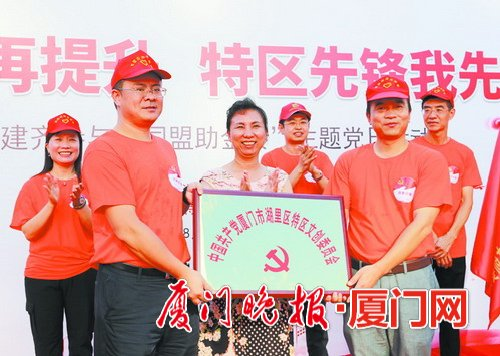
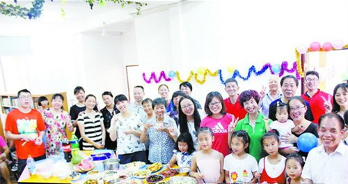
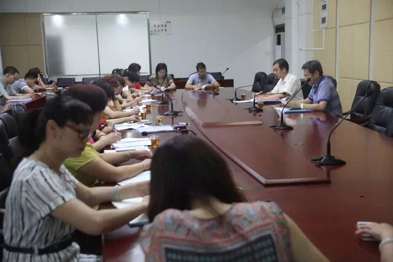
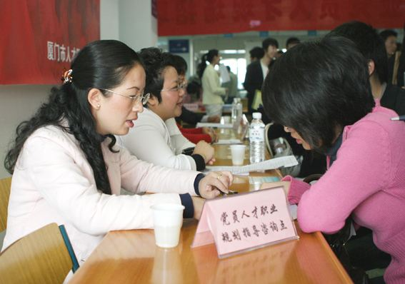
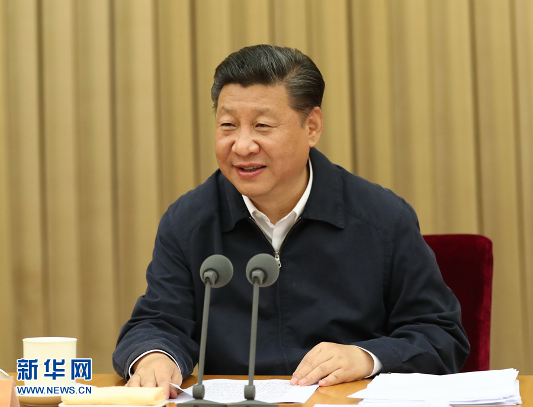
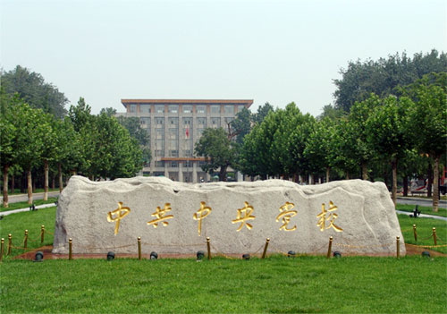
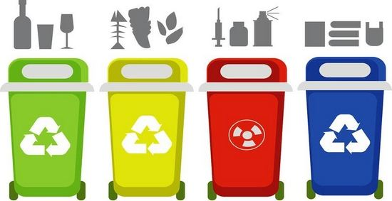
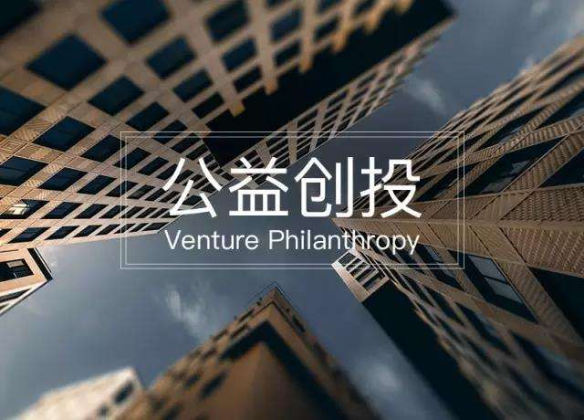
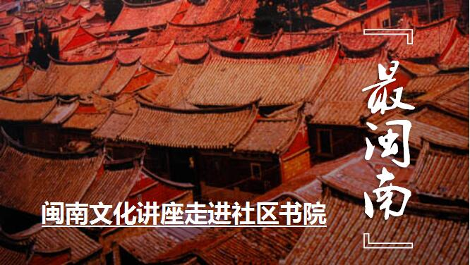

今天是：2017年8月15日 星期二
厦门： 今天 晴到多云 最低温度:26最高温度:35℃
-

【经验】打破条块分割模式 湖里街道推动城市基层党建“跨界发展”城市基层党建是党建引领社会治理创新的新路径。湖里街道党工委传承发扬特区发祥地精神，树立“大党建”理念，持续探索城市基层党建“跨界发展”新模式。 【详细】
-

【经验】打造“幸福党建”品牌 获得感在家门口升级城市基层党建，就好比一个多领域党组织集成的有机生命体。如何让党建肌体更强大？特区发祥地湖里区以全域思维推动党建工作与城市发展深度融合、有机统一，在一个个社区、一座座小区、一栋栋楼宇、一类类群体中凝聚起红色力量，让党建根植城市、引领发展。 【详细】
-
【专家】韩庆祥：我们的理论自信从何而来时代是思想之母，实践是理论之源。我们的理论自信从中国特色社会主义理论的形成、作用和发展中来，同时也需要不断推进在实践上的理论创新，保持和发扬马克思主义政党与时俱进的理论品格。 【详细】
-

【活动】湖里街道召开城市基层党建重点工作推进会湖里街道召开街道基层党建重点工作推进会，总结交流经验，分析重点难点问题，研究部署下步工作，进一步推动街道城市基层党建工作深入开展。 【详细】
-
【观点】充分释放互联网党建优势效应顺应“互联网+”发展趋势，充分发挥互联网信息交换的时域性、互动性、低成本、个性化特点，不断探索充分发挥基层党支部主体作用的新途径。 【详细】
-
【文化】记录片迈入“大片时代” 见证砥砺奋进的五年今年年初，纪录片《航拍中国》在央视综合频道播出时，吸引了观众的眼球，也引发了热烈评论。有观众这样评价这部纪录片——“每一帧都美到想歌唱祖国”。 【详细】
-
 【活动】厦门市着力打造15支基层科技党建工作新品牌据了解，去年以来，市科技局系统各级党组织探索实践了一批富有特色的经验做法，开展了“我是党员我带头”等活动。着力打造全市科技党建工作的有力引领和响亮名片。 【详细】
【活动】厦门市着力打造15支基层科技党建工作新品牌据了解，去年以来，市科技局系统各级党组织探索实践了一批富有特色的经验做法，开展了“我是党员我带头”等活动。着力打造全市科技党建工作的有力引领和响亮名片。 【详细】 -

【综述】十八大以来，我国不断加强专业技术人才队伍建设“功以才成，业由才广。”人才资源是经济社会发展的第一资源，创新驱动实质上是人才驱动。专业技术人才队伍作为我国人才队伍中的骨干力量，对推动经济社会发展和科技创新起着重要的支撑作用。 【详细】
-

【头条】习近平新发展理念 引领中国“不平凡的五年”自党的十八届五中全会提出创新、协调、绿色、开放、共享的发展理念以来，新发展理念凝聚智慧和力量，为中国的发展开辟思路、指明方向、找准着力点。 【详细】
-

【综述】中共中央党校关于全国各级党校学习《习近平的七年知青岁月》的意见引导广大党校学员和教职工进一步深化对习近平总书记系列重要讲话精神的理解和把握，牢固树立“四个意识”，坚持党校姓党、从严治校，以优异成绩迎接党的十九大胜利召开。 【详细】
-
“湖里高层次人才”开通啦
-
湖里街道基层党建案例征集
-
湖里街道率先实现垃圾分类全覆盖
-
湖里区公益创投项目
-
 全国党建云平台上线
全国党建云平台上线 -
“社区书院”：居民第二课堂

联盟伙伴